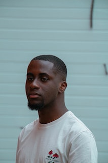

Lawrence Mitchell / (R.A.) Full-stack Development

(Not me)
I'm a relatively simple man; Introverted, not much for talking but sociable when need be, I enjoy learning new
things, particularly related to Science and Technology, Health and Fitness and Geopolitics.
My goals during my enrollment in the RA program are:
- Develop a strong foundational knowledge of the languages and tools necessary for the entire web-dev cycle.
- Create a portfolio of individual and team-built projects to showcase in my developer repositories for
potential employers to view.
- Develop the intellectual discipline necessary for a for a long-standing career in an (at times) mentally
taxing field like computer science.
- Maximize the learning curve afforded to me as a new developer using the experience of the program mentors
and other students.
- Establish a personal and professional network of other developers both new and experienced with the mentors
and other students in this cohort.